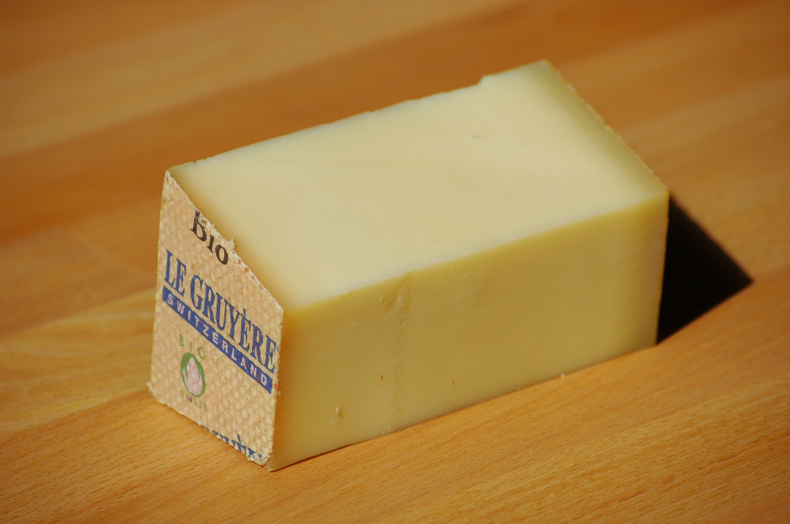

Le Gruyère d'alpage
Affiné dix-huit mois en cave. Sa pâte est ferme, ses cristaux de tyrosine croquent sous la dent.

Affineur depuis trois générations
Affiné dix-huit mois en cave. Sa pâte est ferme, ses cristaux de tyrosine croquent sous la dent.

De septembre à mars uniquement, dans sa boîte d'épicéa. À manger à la cuillère, tiède.